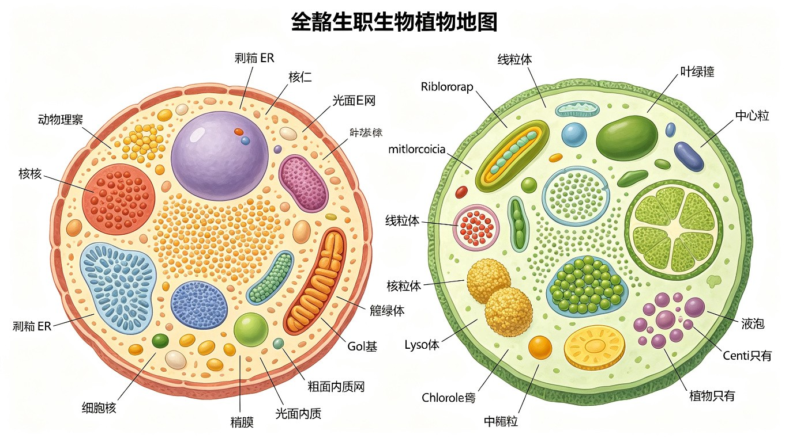

细胞的基本概念与分类
细胞是生命活动的基本结构和功能单位。根据细胞结构的复杂程度，将生物分为三大类群：原核生物（Prokaryote）、真核生物（Eukaryote）和古核生物（Archaea）。1977 年 Carl Woese 根据 16S/18S rRNA 序列分析提出了三域学说（Three-domain system）：细菌域（Bacteria）、古菌域（Archaea）和真核生物域（Eukarya）。
细胞大小的量级：最小的细胞是支原体（Mycoplasma），直径约 0.1~0.3 μm，是已知的可独立生存的最小生物。支原体没有细胞壁，基因组仅约 580 kb（约 470 个基因）。最大的细胞之一是鸵鸟卵细胞（直径可达 10 cm + 卵黄）。神经细胞轴突可达数米长（如长颈鹿的坐骨神经轴突）。

原核细胞 (Prokaryotic Cell)
原核细胞的基本特征：
- 无核膜：遗传物质（DNA）集中在拟核（nucleoid）区域，无核膜包裹。DNA 通常为单条环状双链 DNA 分子，与少量蛋白质结合（非组蛋白）。
- 无膜包被的细胞器：无线粒体、内质网、高尔基体等膜性细胞器。但含有核糖体（70S = 50S + 30S 亚基）。
- 细胞壁：大多数原核细胞（除支原体外）有细胞壁。细菌细胞壁的主要成分是肽聚糖（peptidoglycan，由 GlcNAc + MurNAc + 肽链组成）。
- 细胞大小：通常 1~10 μm，远小于真核细胞（10~100 μm）。
- 基因组：较小（通常 0.5~10 Mb），基因密度高，仅有少量内含子（或无内含子）。
- 质粒（plasmid）：许多细菌含有独立于染色体的环状 DNA 质粒，携带非必需基因（如抗生素抗性基因）。
原核细胞的结构组分：
- 细胞膜：磷脂双层 + 蛋白质。不含胆固醇（例外：支原体含胆固醇）。细菌细胞膜常内陷形成间体（mesosome），可能参与 DNA 复制和细胞分裂（但间体的存在仍有争议，可能是固定形成的假象）。
- 细胞壁：革兰阳性菌（G⁺）——肽聚糖层厚（15~80 nm），含磷壁酸（teichoic acid）；革兰阴性菌（G⁻）——肽聚糖层薄（1~2 nm），外有外膜（含脂多糖 LPS）。
- 荚膜（capsule）：细胞壁外的多糖层，保护细菌免受宿主免疫系统攻击（如肺炎链球菌的荚膜是毒力因子）。
- 鞭毛（flagellum）：由鞭毛蛋白（flagellin）组成的旋转马达结构，驱动细菌运动。与真核鞭毛结构完全不同（无 9+2 微管结构）。
- 菌毛/性菌毛（pilus/fimbria）：蛋白质丝状结构，参与黏附和接合（conjugation）。
古核细胞 (Archaea)
古核生物（Archaea，古菌）是 Woese 三域学说中的独立域，在进化上更接近真核生物而非细菌。古菌大多生活在极端环境（高温、高盐、强酸/碱、厌氧），但也有很多中温环境中的古菌。
古菌与细菌的关键区别：
- 细胞壁：不含肽聚糖。有些古菌的细胞壁由假肽聚糖（pseudopeptidoglycan，含 N-乙酰塔罗糖胺糖醛酸替代 MurNAc）或蛋白质 S 层组成。
- 细胞膜脂质：古菌膜脂是醚键（ether linkage）连接的异戊二烯链（类异戊二烯醇），而非细菌和真核生物的酯键（ester linkage）脂肪酸。有些古菌膜脂为单层（四醚脂），极端耐热。
- DNA 复制、转录和翻译：古菌的 DNA 复制机制与真核生物更相似（如古菌的 DNA 聚合酶与真核 Pol II/III 同源）；转录使用类似真核的 TATA 结合蛋白（TBP）和 TFIIB 同源物；翻译起始 tRNA 为甲硫氨酰-tRNA（而非细菌的甲酰甲硫氨酰-tRNA）。
- 组蛋白：某些古菌（如 Euryarchaeota）含有组蛋白同源物，DNA 可形成类似核小体的结构。
原核细胞与真核细胞的详细对比
| 特征 | 原核细胞 (Prokaryote) | 真核细胞 (Eukaryote) |
|---|---|---|
| 细胞核 | 无核膜，拟核（nucleoid） | 有核膜，真正细胞核 |
| DNA | 环状（通常单条），不与组蛋白结合（少量类组蛋白） | 线性（多条染色体），与组蛋白结合形成染色质/染色体 |
| 基因组大小 | 0.5~10 Mb（大肠杆菌 ~4.6 Mb） | 10~100,000 Mb（人类 ~3,200 Mb） |
| 内含子 | 极少或没有 | 常见（尤其高等真核生物） |
| 核糖体 | 70S（50S + 30S） | 80S（60S + 40S） |
| 膜性细胞器 | 无（无线粒体、ER、高尔基体等） | 有（线粒体、ER、高尔基体、溶酶体等） |
| 细胞壁 | 肽聚糖（细菌） | 植物：纤维素；真菌：几丁质；动物：无细胞壁 |
| 细胞骨架 | 有同源蛋白（FtsZ、MreB、CreS） | 微管、微丝、中间纤维三大系统 |
| 细胞分裂 | 二分裂（binary fission） | 有丝分裂 + 减数分裂 |
| 鞭毛结构 | 鞭毛蛋白（flagellin）旋转马达 | 9+2 微管排列，质膜包裹，滑行运动 |
| 质粒 | 常见 | 罕见（酵母菌有 2μm 质粒） |
| 细胞大小 | 1~10 μm | 10~100 μm（一般 10~20 倍于原核） |
| 转录和翻译 | 偶联（无核膜分隔，边转录边翻译） | 分隔（转录在核内，翻译在胞质） |
| mRNA | 多顺反子（polycistronic） | 单顺反子（monocistronic） |
| 代表生物 | 细菌、蓝藻（蓝细菌）、支原体 | 动物、植物、真菌、原生生物 |
植物细胞与动物细胞的差异
虽然植物细胞和动物细胞都属于真核细胞，但两者在结构和功能上存在显著差异，这些差异反映了植物和动物不同的生活方式（自养 vs 异养，固着 vs 运动）。
| 特征 | 植物细胞 | 动物细胞 |
|---|---|---|
| 细胞壁 | 有（纤维素 + 半纤维素 + 果胶 + 木质素） | 无 |
| 叶绿体/质体 | 有（叶绿体、白色体、有色体） | 无 |
| 中央大液泡 | 有（成熟细胞中央大液泡占体积 90%） | 无大的中央液泡（有小的液泡/溶酶体） |
| 中心体/中心粒 | 无（高等植物无中心粒） | 有（中心体含一对中心粒） |
| 溶酶体 | 通常无典型溶酶体（液泡行使类似功能） | 有 |
| 胞间连丝 | 有（细胞间物质运输和信息交流） | 无（但有间隙连接 gap junction） |
| 能量来源 | 光合作用（自养）+ 呼吸作用 | 呼吸作用（异养） |
| 储存多糖 | 淀粉（淀粉粒在质体中） | 糖原（在胞质中） |
| 细胞分裂 | 形成细胞板（phragmoplast）→ 新细胞壁 | 形成收缩环（contractile ring）→ 分裂沟 |
| 形状 | 通常较规则（细胞壁约束） | 形状多样（无细胞壁约束，可变形） |
补充内容
补充知识点——以下内容整合自教师讲义OCR文字和大学教材，涵盖竞赛高频考点。
细胞学说与经典实验回顾：细胞生物学的发展离不开经典实验。Avery-MacLeod-McCarty 实验（1944）证明 DNA 是转化因子（肺炎链球菌转化实验）；Hershey-Chase 实验（1952）用 ³²P 标记 DNA、³⁵S 标记蛋白质，确证 DNA 是遗传物质；Meselson-Stahl 实验（1958）用 ¹⁵N 密度梯度离心证明了 DNA 半保留复制。这些实验是分子生物学的奠基石。
竞赛重点记忆：Gorter 和 Grendel（1925）从红细胞中提取脂质，铺展成单分子层，发现其面积恰好是红细胞表面积的 2 倍，从而提出脂双层假说——这是细胞膜结构研究的起点。Frye 和 Edidin（1970）的人-鼠细胞融合实验（用荧光标记抗体追踪膜蛋白分布）证明了膜蛋白可以在脂双层中侧向扩散，为流动镶嵌模型提供了关键实验证据。
显微镜技术里程碑：光学显微镜分辨率极限约 0.2 μm（受可见光波长限制）；电子显微镜分辨率可达 0.2 nm（透射电镜 TEM 观察内部结构，扫描电镜 SEM 观察表面形貌）；荧光显微镜（包括共聚焦显微镜 confocal）可标记特定分子在细胞中的定位；冷冻蚀刻技术（freeze-fracture）是观察膜蛋白跨膜分布的关键技术——在脂双层中部断裂，暴露出膜内蛋白颗粒。
本节必背考点
- 三域学说：Bacteria, Archaea, Eukarya（Woese 1977，基于 16S/18S rRNA）。
- 支原体：最小细胞（0.1 μm），无细胞壁，基因组最小（~580 kb）。
- 原核细胞特征：无核膜、无膜性细胞器、70S 核糖体、肽聚糖细胞壁、环状 DNA。
- 古菌特征：膜脂为醚键（vs 酯键），无肽聚糖，转录/翻译机器更接近真核生物。
- 原核 vs 真核：核膜有无、核糖体大小（70S vs 80S）、膜性细胞器有无、细胞壁成分。
- 植物 vs 动物：细胞壁（纤维素）、叶绿体、中央大液泡、胞间连丝 = 植物特有；中心体/中心粒、溶酶体 = 动物特有。
- 细菌细胞壁：G⁺ 肽聚糖厚 + 磷壁酸；G⁻ 肽聚糖薄 + 外膜/LPS。
高中教材衔接 · 课标对应
人教版必修1 第1章 "走近细胞"——原核生物与真核生物：高中课标要求①①区分原核细胞与真核细胞——原核生物（细菌、蓝藻、放线菌、支原体、衣原体、立克次氏体）细胞内无以核膜为界限的细胞核（只有拟核），无染色体（DNA 裸露），只有核糖体一种细胞器；真核生物有真正的细胞核（核膜包被）和多种复杂细胞器（线粒体、内质网、高尔基体等）；②细胞多样性的体现——动物细胞（无细胞壁、有中心体）、植物细胞（有细胞壁、叶绿体、液泡）、真菌（有细胞壁、但细胞壁成分为几丁质非纤维素）、原核生物（只有拟核和核糖体）；③统一性——所有细胞都有细胞膜、细胞质和核糖体。实验：观察细菌（用高倍镜观察各种形态的细菌如球菌、杆菌、螺旋菌）；用碘液染色观察酵母菌。
人教版必修1 第1章 第2节 "原核生物和真核生物"：①原核生物代表——细菌（球菌、杆菌、螺旋菌）、蓝藻（蓝细菌，念珠藻、颤藻、发菜）、放线菌（链霉素产生菌）、支原体（最小细胞型生物，~0.1 μm）；②原核生物的"自养"和"异养"——蓝藻含叶绿素和藻蓝素（光合细菌）；硝化细菌（化能自养）；多数细菌为异养；③蓝藻作为"原核也能光合作用"的特例，含藻胆蛋白、含叶绿素 a，但无叶绿体（光合作用在类囊体膜上）。
人教版必修1 第2章 "组成细胞的分子"——水和无机盐：水是细胞中含量最多的化合物（活细胞 60-95%），分为自由水（代谢活跃）和结合水（结构组成）。水是良好的溶剂，参与生化反应、运输、维持形态。无机盐以离子形式存在（Na⁺/K⁺/Ca²⁺/Mg²⁺/Cl⁻/HPO₄²⁻/HCO₃⁻），维持渗透压、酸碱平衡、参与酶的激活和信号转导。
人教版必修1 第3章 "细胞的基本结构"：①细胞膜（系统边界）；②细胞质基质（代谢场所）；③细胞核（控制中心）；④各种细胞器——线粒体（"动力车间"，有氧呼吸）、叶绿体（"能量转换站"，光合作用）、内质网（蛋白质加工和脂质合成）、高尔基体（蛋白质加工、分类、包装）、核糖体（蛋白质合成场所）、中心体（与动物细胞有丝分裂有关）、液泡（植物特有，调节细胞内环境）、溶酶体（"消化车间"，含多种水解酶）。
2025 / 2026 联赛 · 初赛真题链接
本章重难点深度解析
重难点 1：原核 vs 真核 vs 古菌——三域系统的分子基础
- 三域系统（Carl Woese 1977）：基于 16S rRNA 序列比较，将生物分为三域——细菌域 Bacteria、古菌域 Archaea、真核域 Eukarya。三域在进化上起源于 LUCA（最后共同祖先）。古菌以前误归为"嗜极菌"或"古细菌"，但实际上是独立的进化分支，与真核生物更接近（核糖体 RNA、RNA 聚合酶、DNA 复制相关蛋白、组蛋白相似）。
- 古菌 vs 细菌：① 细胞壁：古菌有假肽聚糖（pseudopeptidoglycan，含 N-乙酰塔罗糖胺糖醛酸 NAGuT 和 N-乙酰葡糖胺 NAG）或 S-层蛋白（S-layer）；细菌有肽聚糖（peptidoglycan，含 N-乙酰葡糖胺 NAG 和 N-乙酰胞壁酸 NAM + 短肽）；② 脂膜：古菌脂质是"醚键+异戊二烯"（二植烷基甘油二醚、双植烷基甘油四醚，能在高温下稳定）；细菌是"酯键+脂肪酸"；③ RNA 聚合酶：古菌 8-12 亚基（与真核 RNAP II 相似），细菌 4 亚基（α₂ββ'ω）；④ 起始 tRNA：古菌是 Met（无甲酰化），细菌是 fMet（甲酰化甲硫氨酸）。
- 真核生物 vs 古菌：① 染色质：真核有 H1/H2A/H2B/H3/H4 八聚体组蛋白；古菌有古菌组蛋白（与真核 H3/H4 同源）；细菌无组蛋白（仅 HU 蛋白）；② 翻译因子：真核和古菌 EF-2 相似（对白喉毒素敏感），细菌 EF-G 不敏感；③ 启动子识别：真核 RNAP II 用 TBP（与古菌 TBP 相似）识别 TATA box，细菌用 σ 因子。
- 真核生物起源的"eocyte 假说"：古菌（特别是泉古菌门 Crenarchaeota）祖先吞噬了 α-变形菌形成真核细胞。支持：① 基因组分析显示真核生物起源于古菌内部（特别是 ASGARD 古菌 Lokiarchaeota）；② 2019 年的研究成果支持真核细胞核内起源于古菌。这挑战了"三域平行"模型。
重难点 2：革兰氏染色的分子机制与抗生素作用靶点
- 革兰氏阳性菌（G⁺）：厚肽聚糖层（20-80 nm，含 30-50 层交叉连接），+ 磷壁酸（teichoic acid，连接磷壁酸 + 膜磷壁酸）。常见：葡萄球菌、链球菌、肺炎链球菌、炭疽杆菌、破伤风杆菌。
- 革兰氏阴性菌（G⁻）：薄肽聚糖层（2-7 nm，仅 1-2 层），+ 外膜（outer membrane，含 LPS 脂多糖和孔蛋白 porin OmpF/OmpC）。LPS 的脂质 A（lipid A）是内毒素（endotoxin）主要成分，引起革兰氏阴性菌脓毒症的休克反应。常见：大肠杆菌、沙门氏菌、志贺氏菌、霍乱弧菌、淋病奈瑟菌。
- 革兰氏染色的机制：结晶紫 + 碘液形成结晶紫-碘复合物（CV-I）进入细胞。乙醇脱色时，G⁺ 的厚肽聚糖失水收缩，CV-I 被困在细胞内，不脱色；G⁻ 的薄肽聚糖+外膜+脂质被乙醇溶解，CV-I 渗出，脱色。沙黄（safranin）复染时 G⁻ 染红色，G⁺ 仍为紫色。
- 抗生素作用靶点：① β-内酰胺类（青霉素、头孢）抑制肽聚糖交联（结合 PBPs 转肽酶）；② 糖肽类（万古霉素）结合 D-Ala-D-Ala 末端，阻断肽聚糖交联（G⁺ 特效，对 G⁻ 无效因万古霉素不能穿过外膜）；③ 多粘菌素（polymyxin）破坏外膜（G⁻ 特效）；④ 氨基糖苷类（链霉素、庆大霉素）抑制 30S 核糖体亚基（蛋白合成起始）；⑤ 大环内酯类（红霉素、阿奇霉素）抑制 50S 核糖体亚基（阻断转位）；⑥ 四环素类抑制 30S 核糖体 A 位（阻断 tRNA 进入）。
重难点 3：细胞器功能与定位机制
- 信号肽假说（Blobel 1999 诺奖）：分泌蛋白、膜蛋白、溶酶体蛋白等在 N 端有信号肽（疏水氨基酸 6-15 个 + 信号肽酶切割位点），被 SRP（信号识别颗粒）识别后引导到内质网膜上的 Sec61 转位酶。共翻译转运（co-translational translocation）—— 蛋白合成到 70 个残基时 SRP 结合，暂停翻译，由 Sec61 进入 ER 腔，信号肽酶切除信号肽。
- 蛋白质分选路径：① 分泌蛋白——ER→高尔基体→分泌颗粒→胞外（exocytosis）；② 膜蛋白——ER→高尔基体→质膜（COPII 顺向，COPI 逆向运输）；③ 溶酶体蛋白——ER→高尔基体→溶酶体（M6P 甘露糖-6-磷酸标记，被 M6P 受体识别）；④ 线粒体蛋白——核基因编码→胞质合成→线粒体前体序列（mitochondrial targeting sequence MTS，N 端 15-50 个残基，含 R/L 阳性残基和螺旋结构）→ TOM/TIM 复合体进入；⑤ 叶绿体蛋白——核基因编码→质体前体序列（transit peptide）→ Toc/Tic 复合体进入；⑥ 核蛋白——核定位序列 NLS（lys-arg-lys-lys 阳性短肽）→ importin α/β 结合 → 核孔复合体 NPC（~125 MDa）→ 核内。导肽切割由线粒体基质蛋白酶（MPP）和基质处理肽酶（MPP+IMP）催化。
- 内膜系统与膜泡运输（Rothman, Schekman, Sudhof 2013 诺奖）：① COPII（小泡直径 60-80 nm，从 ER 出芽到高尔基体）—— Sar1+Sec23/Sec24+Sec13/Sec31 复合体；② COPI（从高尔基体顺面到 ER 逆向运输，回收 ER 蛋白）—— Arf1+coatomer（α/β/β'/γ/δ/ε/ζ 七个亚基）；③ 网格蛋白（clathrin）小泡（高尔基体→内体、质膜→内体）—— AP1/AP2 适配蛋白 + 网格蛋白三脚架（triskelion，3 个重链 + 3 个轻链）；④ SNARE 介导膜融合——v-SNARE（VAMP/synaptobrevin）+ t-SNARE（syntaxin + SNAP-25）形成四螺旋束，介导膜融合。NSF + SNAP 解离 SNARE 复合物循环利用。
重难点 4：非典型生命形式——病毒、朊病毒、卫星颗粒、类病毒
- 病毒（virus）：非细胞生命形式，由核酸（DNA 或 RNA）+ 蛋白质衣壳（capsid）+ 一些病毒带包膜（envelope，来源于宿主质膜）。病毒无代谢系统，必须依赖宿主细胞复制。分类：按核酸类型（DNA/RNA 单/双链、正义/反义）+ 衣壳对称性（二十面体、螺旋、复合）+ 是否带包膜。常见：T4 噬菌体、烟草花叶病毒 TMV、HIV、SARS-CoV-2、流感病毒。
- 朊病毒（prion）：仅由蛋白质组成（无核酸），是"蛋白质感染因子"。PrPC（正常 α-螺旋为主）→ PrPSc（β-折叠为主，致病）——错误折叠诱导其他 PrPC 错误折叠。朊病毒疾病：克雅氏病（CJD，人类）、疯牛病（BSE，牛）、羊瘙痒病（scrapie，羊）。1997 诺奖 Prusiner。
- 类病毒（viroid）：仅由 RNA 组成（无蛋白质衣壳），是已知最小病原体（~250-400 nt），是植物病害（如马铃薯纺锤块茎类病毒 PSTVd）。类病毒通过寄主植物的 RNA 聚合酶 II 复制。
- 卫星病毒（satellite virus）：依赖辅助病毒进行复制的病毒，但其基因组与辅助病毒不同。例：丁型肝炎病毒（HDV）需要乙肝病毒（HBV）的 HBsAg 包膜；腺联病毒（AAV）依赖辅助腺病毒复制（AAV 是基因治疗常用载体，免疫原性低、定向整合到 AAVS1 位点）。